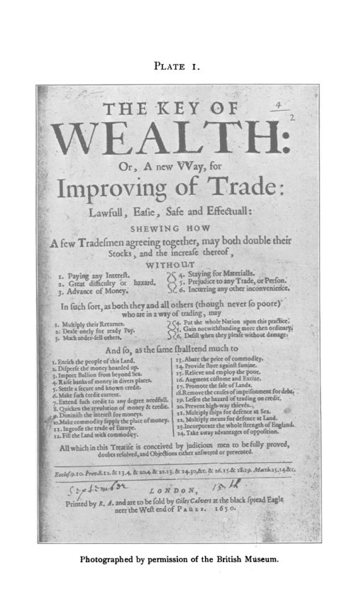

Davis, 1901: o banco da terra que o Parlamento fechou por lei
Leitura: 9 min
Em 1740, cerca de mil colonos de Massachusetts lançaram notas lastreadas em hipotecas e resgatáveis em mercadorias. Davis conta como o Land Bank nasceu, por que dificilmente duraria e como Londres o fechou por lei retroativa.


Em 1649, um estudante de Harvard chamado Rawson pagou a anuidade do colégio com uma vaca velha. O ecônomo creditou o couro, o sebo e as vísceras, e cobrou as duas viagens para buscá-la. Outro aluno pagou pasto, porque entregou a vaca antes que o colégio estivesse pronto para avaliá-la. Era assim, conta Andrew McFarland Davis, a vida de uma colônia quase sem moeda: milho, gado, peles de castor, balas e wampum faziam as vezes de dinheiro.
A cena está em Banking, a segunda parte de Currency and Banking in the Province of the Massachusetts Bay, publicada em maio de 1901 como volume 2, nº 2, da terceira série das Publications of the American Economic Association, em 332 páginas. A primeira parte, sobre a moeda, está comentada na edição nº 56 deste Arquivo. Esta trata dos bancos: os projetos ingleses que inspiraram os colonos, as tentativas de 1686 e 1714 e, sobretudo, o Land Bank de 1740 e seu adversário, o Silver Bank.
De onde veio a ideia de um banco de terra?
Davis lembra que os colonos seguiam a opinião inglesa em finanças, e a certa distância. Os livros de William Potter, publicados em 1650, influenciaram o debate na colônia. Em 1686, um banco de emissão chegou a imprimir cédulas em Boston, com apoio do presidente do conselho, e foi abandonado. Em 1714, um banco privado com garantia de terras foi derrotado quando a própria província passou a emprestar cédulas sobre hipotecas. O promotor de 1714, John Colman, voltaria à carga vinte e cinco anos depois.
O gatilho foi a própria Câmara. Em 28 de junho de 1739, os representantes declararam haver grande escassez de cédulas, o único meio de comércio da província, e convidaram qualquer pessoa a apresentar esquemas para um novo meio de troca cujo valor pudesse ser mantido. Colman e outros 395 subscritores responderam.
Como funcionava o Land Bank?
O esquema era engenhoso e frágil. Os subscritores de um “capital” não aportavam dinheiro: comprometiam-se a tomar emprestadas as notas da companhia, dando terras em hipoteca, e a pagar juros e amortizações em notas ou em produtos da província. A nota prometia ser aceita como dinheiro legal, com a prata a 6s. 8d. a onça, e ser paga, depois de vinte anos, em produtos ou manufaturas. Davis destaca que não havia capital e que a única provisão para um fundo de garantia estava na cláusula de distribuição de lucros.
Por que alguém aceitaria? Davis dá três razões. As Merchants' Notes de 1733, emitidas por comerciantes de Boston e resgatáveis em prata, circulavam então com ágio de 33% sobre as cédulas da província, o que sugeria que papel privado podia funcionar. Muita gente estava envolvida e trazia novos adeptos todos os dias. E o povo já pagava impostos em mercadorias. Davis ressalva que as condições não eram paralelas: as notas dos comerciantes prometiam prata e tinham emissores solventes.
A resposta dos comerciantes foi o Silver Bank. Cento e seis deles, encabeçados por Edward Hutchinson, emitiram notas resgatáveis em prata em 1755, a 20 xelins a onça, com uma escala decrescente de aceitação até lá, o equivalente, observa Davis, a uma taxa de juros baixa. E se comprometeram a recusar em qualquer negócio as notas do Land Bank.
Por que o governo não conseguiu pará-lo?
Porque a Câmara estava do outro lado. Em 19 de junho de 1740, por 59 votos a 37, os representantes resolveram não proibir o Land Bank. Seis líderes da Câmara eram diretores do banco; entre os diretores estava Samuel Adams, pai do futuro líder revolucionário. E a adesão crescia.
O governador Belcher usou o poder de nomear. Em novembro de 1740, ameaçou destituir quem tivesse comissão sua e desse curso às notas. Juízes de paz se demitiram ou foram demitidos, oficiais da milícia também, e advogados que aceitassem as notas foram proibidos de atuar perante o conselho, o que os afastava dos inventários. Belcher escreveu ao agente da província em Londres:
“Nunca se pôs de pé esquema tão vil” (“Never was so vile a scheme set on foot”)
Nem todos se dobraram. Henry Lee, juiz de paz de Worcester, respondeu que faria o possível para incentivar o banco e que
“o privilégio de um inglês é autorização suficiente” (“the privilege of an Englishman is my sufficient warrant therefor”)
Foi destituído. Davis toma posição explícita: enquanto não havia lei contra a experiência, puni-lo por divergir do conselho era perseguição civil. Em maio de 1741, correu o boato de que cerca de cinco mil homens marchariam sobre Boston para forçar o curso das notas; houve ordens de prisão e nenhum levante.
Como fechar por lei um banco que não violava lei alguma?
Os adversários recorreram a Londres. Em 25 de abril de 1741 recebeu assentimento real a lei que estendia às colônias o Bubble Act de 1720, aprovado na época da South Sea Company contra companhias por ações não autorizadas. A nova lei descrevia o Land Bank no preâmbulo, tornava ilegais seus atos, fazia cada sócio responder pessoalmente pelo valor das notas com juros e impunha indenização tripla a quem não abandonasse o esquema até 29 de setembro de 1741.
Davis é duro com essa lei. O Land Bank não era sociedade por ações nem tinha participações transferíveis, e o preâmbulo, diz, era falso ao falar em subscrições pagas aos poucos, porque as prestações amortizavam empréstimos. Em 1735, o procurador-geral Willes não vira objeção legal a um banco desse tipo em Boston, e os juristas da Coroa tinham reconhecido que o Bubble Act não alcançava a América. Para Davis, a pretensão de que alcançava desde a origem era mais que absurda: era perversa. A lei, conclui, era retroativa e ex post facto.
Mas Davis registra também o outro lado. Seis meses depois das primeiras hipotecas, de setembro de 1740, a companhia já pedia aos sócios que pagassem ao menos metade das prestações em manufaturas e permitissem aos diretores reter notas no caixa, sinal de que as notas não se sustentavam em mãos do público. Para ele, é difícil duvidar de que o Land Bank não teria durado muito mesmo sem a intervenção do governo.
Quanto tempo leva para liquidar um banco?
Quase trinta anos, neste caso. Em setembro de 1741, em reuniões em Concord e Milton, os sócios votaram, por estreita maioria, queimar as notas recolhidas e destruir as chapas. Seguiu-se uma sucessão de comissões, avaliações cobradas dos sócios, processos movidos por portadores das notas e uma loteria autorizada pela General Court. Em junho de 1742, havia entre 16 e 17 mil libras em notas por resgatar; em 1759, ainda £ 995.
O último capítulo trata do efeito político. Davis cita John Adams, para quem o episódio teve mais efeito que a Lei do Selo, e considera a opinião provavelmente verdadeira. Avalia que, se Belcher tivesse continuado no cargo, o primeiro choque com a Grã-Bretanha provavelmente teria ocorrido em 1741. Lembra que a história da época chegou filtrada por Hutchinson e Douglass, ambos adversários do Land Bank, o que explicaria o pouco destaque que os historiadores lhe deram. E registra que a lei de 1741 ainda foi invocada num processo recente em Massachusetts.
Na minha leitura
Na minha leitura, a força desta segunda parte está em separar duas perguntas que costumam vir misturadas. Uma é econômica: uma nota lastreada em hipotecas e resgatável em mercadorias dali a vinte anos consegue circular ao par? Davis responde, com documentos da própria companhia, que provavelmente não. A outra é institucional: é legítimo fechar por lei retroativa um arranjo que era legal quando foi feito? Também responde que não, e não deixa que a primeira resposta absolva a segunda.
O episódio ilustra um dilema permanente da moeda privada. A escassez de meio circulante era real, e a demanda por um substituto também. Mas uma promessa sem conversibilidade em ativo líquido vive da aceitação, e por isso os dois lados se organizaram em pactos de aceitar ou recusar notas. Quando a regulação chega tarde e com efeito retroativo, transforma um problema de solvência num problema político.
Glossário
- Land bank
- banco que empresta suas próprias notas contra hipoteca de terras, sem reserva metálica.
- Merchants' Notes
- notas emitidas em 1733 por comerciantes de Boston, resgatáveis em prata em parcelas ao longo de dez anos.
- Silver Bank (silver scheme)
- associação de comerciantes de Boston que, em 1740, emitiu notas resgatáveis em prata em 1755.
- Lawful money
- unidade de conta de Massachusetts, na qual a onça de prata valia legalmente 6s. 8d.
- Bubble Act
- lei britânica de 1720 que proibiu companhias por ações sem autorização legal; estendida às colônias em 1741.
- Ex post facto
- lei que torna ilícito, ou pune, ato praticado quando era permitido.
- Praemunire
- pena do direito inglês que implicava perda de bens e prisão.
- Indenização tripla (treble damages)
- condenação a pagar três vezes o prejuízo causado.
Fontes
- Currency and Banking in the Province of the Massachusetts-Bay: Part II. Banking (pp. 1–332). JSTOR · Internet Archive (PDF)
- Sumário da edição no JSTOR: Publications of the American Economic Association, 3ª série, vol. 2, nº 2.
Documento em domínio público (EUA, publicado antes de 1931), via JSTOR Early Journal Content e Internet Archive. Resumo e comentário do autor deste site, sem afiliação com a American Economic Association. Encontrou um erro? Escreva: a correção é publicada no próprio texto, com data.
← Nº 57 · Detroit, 1900: a concorrência, as concessionárias e o negócio de Veblen Nº 59 · Sewall, 1901: do preço justo ao valor subjetivo, antes de Adam Smith →